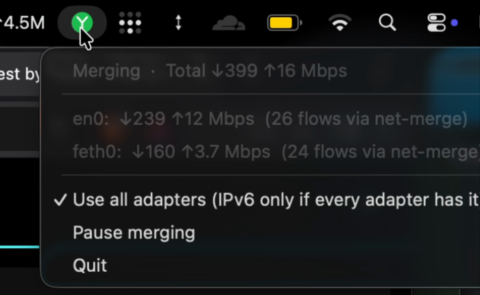
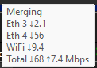
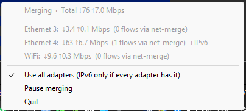

Use all your internet connections at the same time.
net-merge adds up your Wi-Fi, Ethernet and phone hotspot, so downloads, games and browsers get the speed of all of them. Free for Windows, macOS and Linux.
irm https://raw.githubusercontent.com/rohit267/net-merge/main/install.ps1 | iex
Paste it into PowerShell and approve the admin prompt. Antivirus blocked it? Download net-merge-setup.exe and double-click it.
net-merge runs on computers. Open this page on your Windows, Mac or Linux computer to install it.
Where it helps
Apps that open many connections at once get faster:
- Steam and other game downloads
- Web browsers loading pages
- Download managers like IDM, and torrents
- Cloud uploads like Google Drive
- System updates
Where it does not
One single connection always uses one link. So one big file from one server does not get faster.
Browsers can split a download into parts. In Chrome, Edge or Brave, turn on
chrome://flags/#enable-parallel-downloading (use edge:// or
brave:// in those).
It lives in your menu bar or tray
See each connection's speed, pause merging, or turn it off.



Good to know
- No account, no server, no VPN.
- It all runs on your computer. Your traffic goes straight out through your own connections.
- Safe to stop.
- If net-merge quits or crashes, your internet keeps working as before.
- Smart about slow links.
- Faster connections get more traffic. A connection with no internet gets none until it works again.
- Your phone counts.
- No second connection? Plug your phone in over USB and turn on USB tethering, or join its hotspot. How to add one
- Open source.
- MIT license. Read the code on GitHub
Other ways to install
Homebrew, apt, dnf, zypper, apk, pacman, Nix, the Windows installer and a portable zip: step by step in the README. Something wrong? Check Troubleshooting or open an issue.